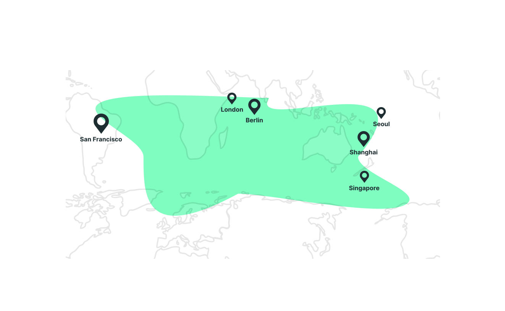

CLV Native Token
Clover’s native CLV token enables token holders to participate in consensus, governance and the success of the protocol.
The CLV token has several value capture utilities.
- Staking
- Consensus is ensured via Nominated Proof-of-Stake (NPoS). Validators run infrastructure with high availability and security and compete for votes by nominators. Nominators are CLV token holders and share part of the rewards earned by validators for helping build a secure system.
- Dividends
- CLV gives users the right to receive dividends from Clover’s profit, making token holders also the shareholders of Clover.
- Governance
- CLV is used in on-chain governance for proposals and voting.
- Fees
- Transaction fees on Clover are paid in CLV.
More Opportunities In The Worldwide
-
500,000+
Bithumb Users
-
100,000+
Polkadot Users
-
30+
Locations worldwide

- Bithumb Family
- Polkadot community
Partner
Cryptocurrency exchanges, DeFi companies, application developers and more